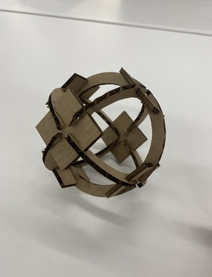
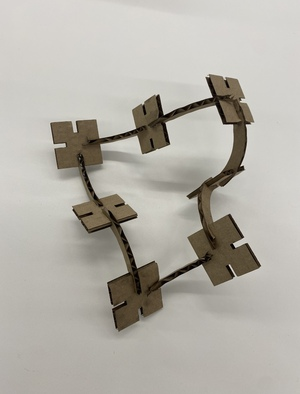

<br>
#### Week 2: 2D Design & Cutting
<i> Assignment:
Create a press-fit construction kit that can be assembled in multiple ways, and accounts for lasercutter kerf.
Examples: Kassia's triangles, Chris's pencil holder, Kian's Moose
Work through a Fusion 360 tutorial, like this or some of these (or similar if you are using other software) and document what you produce.
Select at least 2 household objects or components from the lab (could be items you think you might include in your final project). Measure them using calipers, and model them in Fusion 360 (or other program). Create an assembly using these components, and document your work on your webpage. You may also incorporate items from other 3D model repositories like GrabCad. </i>
And here is a <a href="https://nathanmelenbrink.github.io/intro-dig-fab/02_cutting/index.html">Link to the original assignment page</a>
As I have previously mentionned, I know Solidworks which is similar to Fusion 360. When I saw the assignemnt at first I wasn't worried. Let me tell you that I was WRONG! My Solidworks skills left my body and I had to learn again to use Fusion 360.
I did it a bit solo and I also followed the tutorials.
To complete the assignement, I didn't really know what to make so I figured I would just print some random pieces.
Here is an image:

And here is a [link](../index.html).